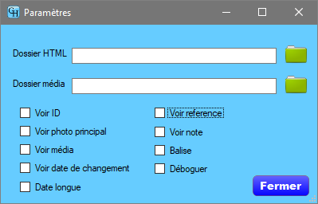

ParamètreDossier HTMLOn tape dans ce champ le nom du dossier qui va servir à enregistrer les fichiers générés par GH au format HTML. Dans ce dossier, il sera créé un dossier portant le même nom que le fichier GEDCOM sans son extension. En cliquant sur , on ouvre une fenêtre pour sélection un dossier ou en créer un à l'endroit désiré. Si l'arrière-plan du champ est rouge, le dossier n'existe pas. Dossier médiaOn tape dans ce champ le nom du dossier qui contient les fichiers des médias référencés dans le fichier GEDCOM si le besoin est. On n'a probablement pas à le faire, si le fichier GEDCON a été généré sur votre ordinateur et que les fichiers n'ont pas été déplacés. On doit le faire, s'il y a des médias référencés dans le fichier GEDCOM qui ne sont pas dans les dossiers spécifiés sur votre ordinateur, mais sont plutôt tous regroupés dans un autre dossier de votre ordinateur, sélectionner ce dossier. On doit le faire, si on vous donne un fichier GEDCOM et les fichiers médias provenant d'une autre source que votre ordinateur. En cliquant sur , on ouvre une fenêtre pour sélection un dossier ou en créer un à l'endroit désiré. Si l'arrière-plan du champ est rouge, le dossier n'existe pas. Voir IDChaque fiche dans le fichier GEDCOM a une identification unique. Cocher l'option si vous voulez voir l'information dans la fiche. Photo principaleCochez la case si vous voulez voir le premier média spécifié pour une fiche individu ou de famille. De préférence, dans le logiciel de généalogie si possible placez une photo et non un document. Voir médiaCochez la case si vous voulez voir tous les médias disponibles pour consultation dans les fiches HTML générées. Voir date de changementCochez la case si vous voulez voir la date de la dernière mise à jour de l'information. Date longueCochez la case si vous voulez avoir la date longue. C'est-à-dire 1er janvier 2020 au lieu de 2020/01/01 Voir référenceCochez la case si vous voulez voir les sources (citations) des informations. Voir noteCochez la case si vous voulez voir les notes. BaliseChaque ligne d'un fichier GEDCOM commence par une balise qui détermine le contenu de la ligne. Certains logiciels de généalogie utilisent leurs propres balises. Si GH n'interprète pas certaines balises et que l'option est cochée, les lignes seront enregistrées dans le fichier balise.txt dans le dossier HTML. Ce fichier pourra être soumis au développeur, avec si possible le fichier GEDCOM, pour analyse. Une mise à jour du logiciel pourrait ensuite lire ses balises et afficher les informations dans les rapports. Le fichier balise.txt et le fichier GEDCOM peuvent être édités par l'usager. Si son ficher GEDCOM contient des informations confidentielles, il doit les remplacer pas des astérisques avant de les envoyer au développeur. DéboguerCette case est temporaire et paraitra dans GH en développement et dans la version Beta. Si la case est cochée, GH enregistres des informations sur le déroulement du logiciel dans le fichier deboguer.txt dans le dossier HTML. Ce fichier pourra être soumis au développeur, avec si possible le fichier GEDCOM, pour analyse. Le fichier deboguer.txt et le fichier GEDCOM peuvent être édités par l'usager. Si son ficher GEDCOM contient des informations confidentielles, il doit les remplacer pas des astérisques avant de les envoyer au développeur. FermerFerme la fenêtre. Les changements sont enregistrés au moment de la modification. |